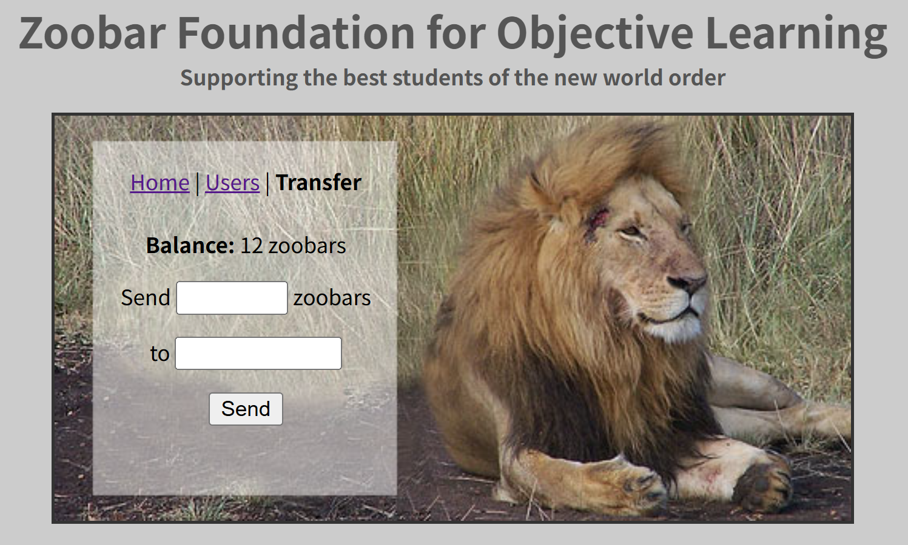

Lab 2: Privilege separation and server-side sandboxing
0x01. Environment Setup
Introduction
使用 git 提交 Lab1 的解决方案，并切换到分支 Lab2:
1 | cd lab |
本实验将以一个名为 zoobar 的简单 Python Web 应用为例，向你介绍权限分离和服务器端沙箱。在 zoobar 应用中，用户可以相互转账“zoobar”（积分）。权限分离的主要目标是：即使攻击者攻陷了应用的某一部分，也不能影响到其他部分。
为了帮助你实现权限分离，zookws Web 服务器（你在上一个实验中已经见过）被设计为运行由多个组件组成的 Web 应用。如果你感兴趣，这种设计借鉴了 OKWS Web 服务器（相关论文中有介绍，okcupid.com 也曾使用）。在现代大规模系统中，通常会有更多的组件，比如用 Kubernetes 管理所有应用组件、用 gRPC 进行组件间通信等，但 zookws 将这些内容简化到了一个相对简单的系统中。
在本实验中，你将搭建一个权限分离的 Web 服务器，分析潜在的漏洞，并将应用代码拆分为低权限组件，以最小化单点漏洞的影响。实验将使用 Linux 容器来实现现代的权限分离。（原始的 OKWS 设计使用的是用户 ID 和 chroot，因为当时还没有 Linux 容器和命名空间。）
你还将扩展 Zoobar Web 应用，支持可执行的用户主页（executable profiles）：允许用户将 Python 代码作为自己的主页内容。当其他用户访问该主页时，服务器会执行主页中的 Python 代码来生成展示内容。例如：
- 一个主页可以向访问者打招呼；
- 一个主页可以记录最近几位访问者；
- 一个主页可以给每位访问者赠送一个 zoobar（每分钟限一次）。
要安全地支持这些功能，必须在服务器端对可执行代码进行沙箱隔离，防止其执行任意操作或访问任意文件。另一方面，这些代码又需要能够访问某些持久化数据文件或 zoobar 数据库。你将使用我们提供的远程过程调用库和一些 shim 代码，在服务器端用 WebAssembly 安全地沙箱化可执行主页。
What’s a zoobar?
为了理解 zoobar 应用本身，我们首先来看看 zoobar Web 应用的代码。
zoobar 应用的一个核心功能是用户之间可以相互转账积分（zoobar）。这个功能由脚本 transfer.py 实现。
你可以用以下命令操作容器：
- zookld.py：启动 zook.conf 里列出的容器
- zookps.py：列出 zook.conf 里容器的状态和它们运行的进程
- zookstop.py：停止 zook.conf 里列出的容器
- zookclean.py：删除 ~/.local/share/lxc 下的所有容器（如果你想从头再来一次）
登录网站并注册两个账号，进入 tranfer 页面，可以看到如下的界面:
在两个表单中可以填写转账的目标名称和钱数。让我们从找到代码的对应位置。
tranfer.html
里面定义了前端样式，其中当前账户拥有的钱数会根据 zoobar.js 中的 myZoobars 渲染，两个表单会获取 zoobars 和 recipient 属性。
init.py
init.py 文件是 zoobar Web 应用的主入口，负责初始化 Flask 应用、注册路由、加载各个功能模块，并做了一些安全和兼容性处理。
- 创建 Flask 应用实例
- 把不同的 URL 路径映射到对应的处理函数（视图函数）
- 每次请求后，给响应头加上 X-XSS-Protection: 0，关闭浏览器的 XSS 保护（方便调试和测试 XSS 漏洞）
- 定义一个 WSGI 中间件类 HTTPSFix，用于修正 HTTPS 相关的环境变量
tranfer.py
实现转账功能:
@catch_err：捕获并处理函数中的异常，防止服务器崩溃，并输出调试信息@requirelogin：要求用户必须登录，否则会被重定向到登录页面- 如果表单中有
recipient字段（即用户提交了转账表单）：- 读取
zoobars字段（要转账的数量），用eval转成数字 - 调用
bank.transfer，把当前登录用户（g.user.person.username）的 zoobar 转给表单中的recipient用户，数量为zoobars - 如果成功，设置 warning 为 “Sent X zoobars”
- 读取
- 如果在转账过程中出现
KeyError, ValueError, AttributeError，设置错误信息 - 最后渲染
transfer.html模板
0x02 Part 1: Privilege-separate the web server setup using containers
We will start to further privilege-separate the zookfs service that handles both static files and dynamic scripts. We would like to control with whom dynamic and static can communicate.
在 Lab1 中，zookws 其实只有一个进程：zookd。从安全角度看，这种结构并不理想：比如你发现的任何缓冲区溢出漏洞，都可以用来完全控制 zookws。
本实验将 zookd 按照 OKWS 的设计进行重构。
- 一个启动器程序 zookld.py, 它根据 zook.conf 文件启动各个服务
- 一个 zookd，只负责把请求路由到对应的服务
- 多个服务进程
我们会把每个组件都放在独立的 Linux 容器里。容器本质上是受限的 Linux 进程，提供了类似虚拟机的隔离效果（但不是虚拟机）。容器内的进程对内核命名空间、系统调用、文件系统的访问都有限制。每个容器有自己的 IP、文件系统等。你可以给容器分配 IP，把需要的文件拷进去，并安排它们之间的远程过程调用（RPC）。
我们用的是非特权容器，即使容器内的进程是 root，容器本身也只是普通用户权限。这样即使容器被攻破，攻击者也很难影响主机系统。
在 zook.conf 中可以配置每个容器的启动方式，例如:
1 | [main] |
每个虚拟网络（lxcbr0~9）对应一个子网（如 10.1.0.*），每个容器分配 .4 结尾的 IP（如 lxcbr=7 时 IP 为 10.1.7.4）。这样可以实现容器间的网络隔离：同一虚拟网络的容器可以互相通信，不同虚拟网络的容器通信必须经过主机内核，主机会阻止 IP 欺骗。
实验要求我们对 HTTP 服务进行拆分，一个部分负责静态文件，一个部分负责动态文件:
- dynamic：只执行 /zoobar/index.cgi（即所有 Python 脚本），不提供静态文件
- static：只提供静态文件，不执行任何脚本
这两个服务都用 cmd = zookfs，但通过 url 正则表达式过滤请求类型。比如 dynamic 只处理 /zoobar/index.cgi，static 只处理静态文件请求。
我们修改 zook.conf 就可以实现该功能:
1 | [main] |
同时，还需要设置防火墙规则，用 iptables 控制哪些容器可以访问本容器:
- static 只接受来自 main 的数据包
- dynamic 只接受来自 main 的数据包
- static 和 dynamic 之间不能直接通信
在 zook.conf 加上防火墙过滤功能:
1 | [dynamic] |
将 zoobar 应用拆分到多个容器的一个挑战是：容器内的进程必须有办法相互通信。为此，需要一个远程过程调用（RPC）库，它允许进程之间进行通信。随后，你将用这个库把 zoobar 拆分成多个进程，每个进程在自己的容器中，通过 RPC 进行通信。
简单阅读 RPC 相关的代码（rpcsrv.py），
0x03 Part 2: Privilege-separating the login service in Zoobar
First. Separate the authentication code
保护密码的第一步是创建一个专门处理用户密码和 cookies 的服务，这样只有该服务能直接访问这些信息，Zoobar 应用的其他部分不能直接访问。具体来说，我们想要将处理用户身份验证（即密码和令牌）的代码与应用的其他代码分离。
当前的 zoobar 应用将用户的所有信息（个人资料、zoobar 余额和身份验证信息）都存储在 Person 表中（见 zoodb.py）。我们想要将身份验证信息从 Person 表中移出，放入一个单独的 Cred 表（Cred 代表 Credentials，凭据），并将访问这些身份验证信息的代码（即 auth.py）移到一个单独的服务中。
实验要求实现用户身份验证的权限分离，可以拆分为 4 个步骤:
第一步：分析现有代码
我们需要将 password 和 token 相关的所有函数单独移动到认证服务中，故 auth.py 中的函数需要移动到认证服务里，login.py 调用 auto.py 中函数的函数需要改成 RPC 调用。
第二步：拆分数据库表结构
- 创建新的
Cred表，存储用户认证信息（用户名、密码、token） - 从原有的
Person表中移除密码和 token 字段 - 修改 zoodb.py，添加
Cred模型和相应的setup函数 - 修改 auth.py，将原来对
Person表的调用改成对Cred表的调用。注意，对于注册功能，要向Person表和Cred表都插入条目，而且不同容器的数据库是相互独立的！
1 | class Cred(CredBase): |
第三步：创建函数调用抽象层，修改客户端调用
首先实现 auth-server.py：
1 | class AuthRpcServer(rpcsrv.RpcServer): |
login.py 原本调用 auth.py 的功能，此处更换为借助 auth_client.py 向认证服务发起 RPC 通信，进而调用其内部 auth-server.py 的函数进行处理。
第四步：配置容器和网络
将认证服务置于 auth 容器中，并配置网络访问权限:
1 | [auth] |
Second. Password hashing and salting
当前的身份验证代码在数据库中存储了用户密码的精确副本。因此，如果敌手以某种方式获得对crede .db文件的访问权，所有用户密码将立即被泄露。更糟糕的是，如果用户在多个网站上使用相同的密码，攻击者也可以入侵用户的账户！
散列可以通过存储用户密码的哈希值而不是密码本身来防止这种攻击。散列的一个缺点是，攻击者可以建立一个彩虹表，其中包含所有可能的密码的散列值。然后，如果攻击者获得了某个人的哈希密码，攻击者只需在其巨大的哈希表中查找，就可以获得原始密码。
为了克服彩虹表攻击，大多数系统使用盐化。使用 salt 时，服务器存储的不是密码的哈希值，而是密码的哈希值和一个随机生成的字符串 salt。为了检查密码是否正确，服务器将用户提供的密码和 salt 连接起来，并检查结果是否与存储的散列值匹配。
实验要求在认证服务中实现密码哈希和加盐，具体有三个步骤:
- 扩展 Cred 表，增加一个 salt 列
- 修改注册代码，选择一个随机盐值，并存储密码的哈希值和盐值，而不是密码本身
- 修改登录代码，将提供的密码与存储的盐值一起哈希，并与存储的哈希值进行比较
修改 Cred 表:
1 | class Cred(CredBase): |
修改注册代码:
1 | def register(username, password): |
修改登录代码:
1 | def login(username, password): |
Part 3: Privilege-separating the bank in Zoobar
最后，我们想要保护每个用户的 zoobar 余额，防止可能利用 Zoobar 应用中某些漏洞的攻击者。目前，如果攻击者利用主 Zoobar 应用中的漏洞，他们可以窃取任何人的 zoobars，而且如果我们想要稍后审计，这甚至不会出现在 Transfer 数据库中。
First. Separate the transfer code
为了提高 zoobar 余额的安全性，实验的要求类似于上面的认证服务中所做的：将 zoobar 余额信息拆分到一个单独的 Bank 数据库中，并建立一个 bank 服务，其工作是对新的 Bank 数据库和现有的 Transfer 数据库执行操作。只要只有 bank 服务可以修改 Bank 和 Transfer 数据库，Zoobar 应用其余部分的漏洞就不应该给攻击者修改 zoobar 余额的能力，并将确保所有转账都被正确记录以供未来审计。
第一步：分析现有代码
我们需要创建一个 Bank 数据库，存放用户名和对应的 zoobar 数。创建 bank_client.py，替代 bank.py 作为转账服务的接口，bank_client.py 会调用 RPC 向转账服务发起请求。
第二步：创建 Bank 数据库
- 创建新的
Bank表，存储用户钱币信息 - 修改 zoodb.py，添加
Bank模型和相应的 setup 函数 - 修改 bank.py 中的 balance 函数，当用户名不在
Bank数据库时，需要插入新条目 - 修改其他相关部分
第三步：创建函数调用抽象层，修改客户端调用
首先实现 bank-server.py:
1 | class BankServer(rpcsrv.RpcServer): |
第四步：配置容器和网络
将转账服务置于 bank 容器中，并配置网络访问权限：
1 | [bank] |
Add transfer authentication
我们需要修复 bank 服务的一个问题。特别是，可以访问 bank 服务（即可以向其发送 RPC 请求）的攻击者可以从任何人的账户向自己的账户执行转账。例如，它可以通过发出 transfer(victim, adversary, 1) RPC 请求从任何受害者那里窃取 1 个 zoobar。问题是 bank 服务不知道是谁在调用 transfer 操作。
为了验证 transfer 操作的调用者，我们将要求调用者提供一个额外的 token 参数，该参数应该是发送者的有效 token。如果 token 无效，bank 服务应该拒绝转账。
修改 bank.py 中的 transfer 函数，调用 auth 服务来进行 token 认证:
1 | def transfer(sender, recipient, zoobars, token): |